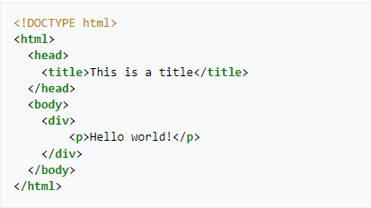

The HyperText Markup Language or HTML is the standard markup language for documents designed to be displayed in a web browser. It can be assisted by technologies such as Cascading Style Sheets (CSS) and scripting languages such as JavaScript. Web browsers receive HTML documents from a web server or from local storage and render the documents into multimedia web pages. HTML describes the structure of a web page semantically and originally included cues for the appearance of the document. HTML elements are the building blocks of HTML pages. With HTML constructs, images and other objects such as interactive forms may be embedded into the rendered page. HTML provides a means to create structured documents by denoting structural semantics for text such as headings, paragraphs, lists, links, quotes and other items. HTML elements are delineated by tags, written using angle brackets. Tags such as < img /> and <input /> directly introduce content into the page. Other tags such as <p> surround and provide information about document text and may include other tags as sub-elements. Browsers do not display the HTML tags but use them to interpret the content of the page. HTML can embed programs written in a scripting language such as JavaScript, which affects the behavior and content of web pages. Inclusion of CSS defines the look and layout of content. The World Wide Web Consortium (W3C), former maintainer of the HTML and current maintainer of the CSS standards, has encouraged the use of CSS over explicit presentational HTML since 1997.[2] A form of HTML, known as HTML5, is used to display video and audio, primarily using the <canvas> element, in collaboration with javascript.
Markup
HTML markup consists of several key components, including those called tags (and their attributes), character-based data types, character references and entity references. HTML tags most commonly come in pairs like <h1> and </h1>, although some represent empty elements and so are unpaired, for example <img>. The first tag in such a pair is the start tag, and the second is the end tag (they are also called opening tags and closing tags). Another important component is the HTML document type declaration, which triggers standards mode rendering. The following is an example of the classic "Hello, World!" program:
Semantic HTML
Semantic HTML is a way of writing HTML that emphasizes the meaning of the encoded information over its presentation (look). HTML has included semantic markup from its inception,[83] but has also included presentational markup, such as <font>, <i> and <center> tags. There are also the semantically neutral span and div tags. Since the late 1990s, when Cascading Style Sheets were beginning to work in most browsers, web authors have been encouraged to avoid the use of presentational HTML markup with a view to the separation of presentation and content.[84] In a 2001 discussion of the Semantic Web, Tim Berners-Lee and others gave examples of ways in which intelligent software "agents" may one day automatically crawl the web and find, filter and correlate previously unrelated, published facts for the benefit of human users.[85] Such agents are not commonplace even now, but some of the ideas of Web 2.0, mashups and price comparison websites may be coming close. The main difference between these web application hybrids and Berners-Lee's semantic agents lies in the fact that the current aggregation and hybridization of information is usually designed in by web developers, who already know the web locations and the API semantics of the specific data they wish to mash, compare and combine. An important type of web agent that does crawl and read web pages automatically, without prior knowledge of what it might find, is the web crawler or search-engine spider. These software agents are dependent on the semantic clarity of web pages they find as they use various techniques and algorithms to read and index millions of web pages a day and provide web users with search facilities without which the World Wide Web's usefulness would be greatly reduced. In order for search-engine spiders to be able to rate the significance of pieces of text they find in HTML documents, and also for those creating mashups and other hybrids as well as for more automated agents as they are developed, the semantic structures that exist in HTML need to be widely and uniformly applied to bring out the meaning of published text.[86]